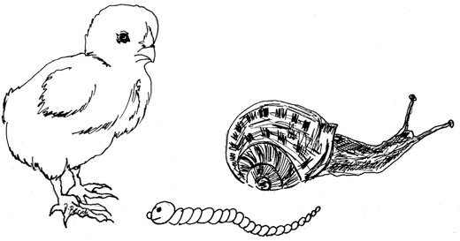

Znatiželja
Curiosity

Jutros na bunjištusrelo pile glistu,pročita joj vijestina kupusnom listu:
This morning a chickon the dung-heap meta worm, and read herthe cabbage gazette:
„Danas poslije ručkau mokrome luguspremaju se puževina utrku dugu.“
"Today, after lunch,in the damp, marshy dale,there's a long-distance racefor every snail."
Glista pomno slušašto joj čita dasa,prekasno je vidjelada joj nema spasa.
The worm listened closelyto what the slick fellow read;too late she realisedshe was as good as dead.
Pa nije ni stiglapodići uzbunu,a već se našlau pilećem kljunu.
She hadn't the timeto let out a squeak,and there she alreadywas, in the chick's beak.